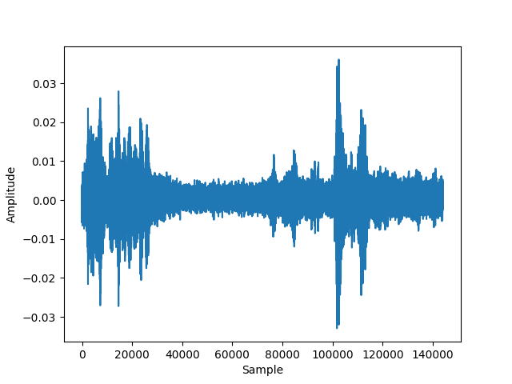
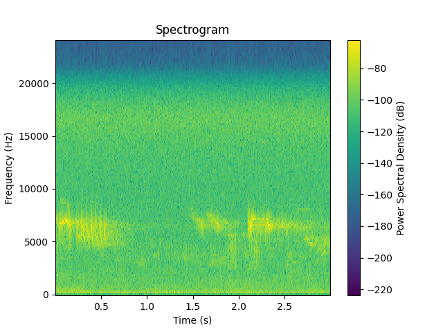

Audio Processing
Introduction
The goal of this lesson is to
- load an audio file
- divide the file into pieces of a specific length (chunks)
- plot the signal of a chunk
- save the signal to a file and listen to it
In order for you to get a feeling of how audio data is represented in a computer read the following section.
Digital representation of audio data1
The jounrey from a physical sound wave to its digital representation is as follows:
-
Sound Capture: Sound waves from voices, instruments, or any audio source hit the microphone.
-
Electrical Conversion:: Inside the microphone, there's a device that converts these sound waves into electrical signals. These signals are still analog, which means they vary continuously like the original sound waves. The microphone sends these analog signals to an ADC (Analog-Digital-Convert).
-
Sampling: The ADC takes snapshots of the analog signal at regular intervals. This is called 'sampling'. Each snapshot measures the amplitude (volume) of the audio signal at that specific moment. The rate at which this happens is called
sampling rate. A typical sampling rate is 44100 Hz which means the ADC takes 44100 measurements per second. -
Quantization: Each sampled amplitude value is then converted into a digital number. The range of numbers that can be used is determined by the 'bit depth'. Higher bit depth means the audio can be more accurately represented. A typical bit depth ist 16 bit. That means that 2^16=65536 different values can be stored for each sample.
-
Binary Representation: The numbers are converted into binary code, which is a series of 0s and 1s, because that's the language computers understand. A wave file contains all the samples at their specific bit depth.
-
Compression and Encoding (Optional): Sometimes the raw audio data is compressed to save space. Famous compression methods are MP3 (MPEG-1 Layer 3) or AAC (Advanced Audio Coding).
-
Storage: Finally, these binary numbers are stored in a file on the computer. If it's a WAV file, it also includes a header with information about the audio like its sample rate, bit depth, and channels (mono or stereo).
You'll find a more detailed introduction here2
Lesson Steps
Part 1 - Loading and saving audio
The file test_1min.wav contains a one minute recording of bird sounds.
-
Download the file test_1min.wav and store it in your project folder under a new folder you name
testdata. -
Create a file
audio.pyin thebirdnet_-_minifolder. This will contain all your audio processing functions. Your directory shall now look like this: -
In
audio.pycreate a new function calledopen_audio_filewith the following signature:Use the load function from the Python package librosa to load the file inside the function as mono audio and return the sample samples and the sample rate.
offsetanddurationare important arguments, when files are too large to be loaded at once. they allow for loading only a part of the file. -
Write another function
save_signalthat takes a filename, a signal (samples) as arguments and uses the write function from the soundfile package to write an audio signal to a wav file. -
Now go back to
main.py, import your two functions and test them by loading the test filetest_1min.wavand save it again under a different name. Listen to the saved file! -
Have a look at how the signal is stored as a numpy array.
Part 2 - Splitting audio and plotting the signal
In order to process the audio by the machine learning model, we need to split it into chunks of a specific length.
-
In the file
audio.pyWrite a functionsplit_signalthat takes a signal and a chunk length as arguments and returns a list of chunks. The function signature may look like this:def split_signal(signal: np.ndarray, rate:int, seconds:float, overlap: float, min_len:float) -> List[np.ndarray]:Remember that your signal is stored as samples. Use numpy indexing to split the signal into chunks of a specific length given in seconds. The overlap is sometimes used to make the result more robust. You may omit it if that's too complicated.
-
(Optional) The signal may not always have a length to get an integer number of chunks. Test if the chunks are too short and if so, add random noise to the end of the signal to make it meet the requested length. You may use the numpy random function to create gaussian noise.
-
Return the chunks in a default python list.
-
Test your function in
main.pyby loading the test file and splitting it into chunks of 3 seconds. -
Now plot the signal of one of the chunks using the matplotlib package. The result for chunk 0 should look like this:

-
Notice, that the signals amplitude is oscillating between -1 and 1 which is a typical data representation for audio signals. Also notice, that the amplitude it rather small.
-
(Optional) To get a better understanding of which frequencies are usually in the signal (over time), you may create a spectrogram of the signal using the scipy- signal - module and plot it with matplotlib as well:
